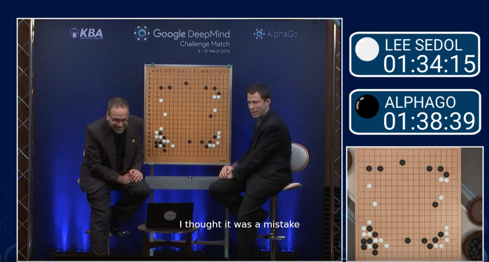
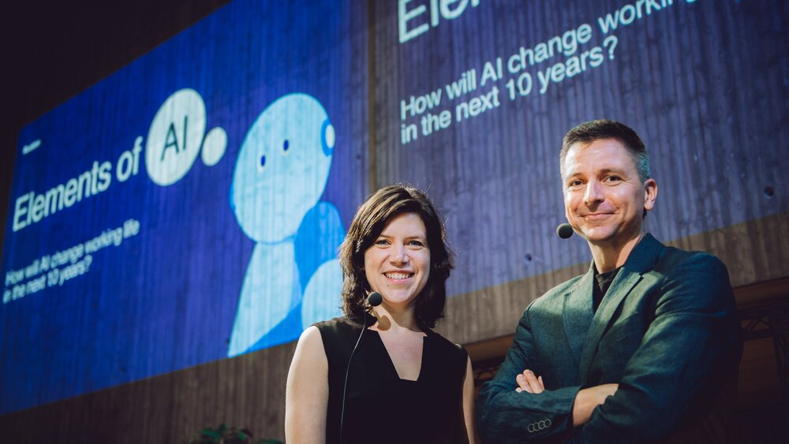
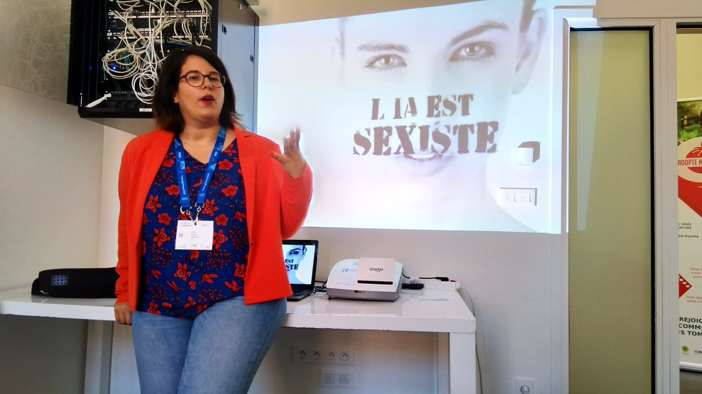

Les biais de l'intelligence artificielle
Le 10 mars 2016, le meilleur joueur de go du monde, Lee Sedol, affrontait AlphaGo, un programme informatique développé par Google DeepMind. S’attaquer au Go est une tâche particulièrement difficile pour l’intelligence artificielle (IA) car, à différence des échecs, les ordinateurs ne sont pas capables de calculer toutes les combinaisons possibles du jeu (plus nombreuses que le nombre d’atomes dans l’univers). Dès lors, pour s’imposer face à son rival, AlphaGo devait faire preuve d’intuition et créativité : deux qualités considérées essentiellement humaines.
Au bout d’une heure et demie de jeu, lors du 37ème tour, AlphaGo joue un coup déconcertant : la position O10. Les commentateurs envisagent la possibilité qu’il s’agisse d’une erreur. Les spécialistes ont du mal à croire cette décision amplement considérée comme mauvaise. Néanmoins, après trois heures et demie de jeu, AlphaGo bat Lee Sedol, confirmant ainsi le génie derrière ce mouvement. Le coup 37 est rentré dans la liste des moments phares de l’IA, prouvant sa capacité à développer une créativité dépassant celle de son homologue humain.
 Les commentateurs du match entre Lee Sedol et AlphaGo surpris par le mouvement 37 Vidéo
Cette aptitude a propulsé l’IA vers de nombreux domaines. Le secteur bancaire l’utilise pour évaluer le risque d’accorder un crédit. L’industrie médicale investit dans des systèmes aidant la détection des maladies. Des systèmes de renseignement policier basés sur l’IA voient le jour. Dans le domaine militaire, une véritable course aux armements basés sur l’IA se déroule en ce moment. Mais aussi en droit, logistique, journalisme et même art, l’IA est un bon élève devenu omniprésente.
Néanmoins, éduquer une machine n’est pas chose aisée et les enseignants chargés de cette tâche sommes nous tous. Nous, qui sommes si prônes à une multitude d’irrationalités. Nous, qui entretenons des dogmes remarquablement résistants aux faits qui les contredisent. Nous qui, en délégant tant d’aspects de nos vies aux nouvelles technologies, prenons le risque de pérenniser nos biais.
L'ordinateur a appris à partir des humains comment discriminer, et il a fait le travail avec une efficacité à couper le souffle
- Cathy O'Neil « Weapons of Math Destruction »
Une IA peut-elle discriminer ?
Microsoft Tay
En mars 2016, Microsoft a mis sur Twitter un agent conversationnel basé sur l’IA appelé Tay. Tay avait comme objectif de développer son langage à la suite des discussions avec des êtres humains.
Après seulement 24 heures, Tay tenait des propos racistes, misogynes et négationnistes tellement graves que Microsoft a dû la débrancher. Après quelques ajustements, une deuxième tentative a été faite une semaine plus tard avec le même résultat. Microsoft a jeté l’éponge dénonçant un “effort coordonné de plusieurs utilisateurs pour abuser des compétences de Tay”.
"Tay" went from "humans are super cool" to full nazi in <24 hrs and I'm not at all concerned about the future of AI pic.twitter.com/xuGi1u9S1A
— gerry (@geraldmellor) March 24, 2016
La nature des propos de Tay ne laissent personne indifférent. Néanmoins, on peut probablement se dire que l’impact de cet agent conversationnel n’est pas immense. Après tout, en ce qui concerne les comptes tenant des propos inacceptables, Twitter n’en est pas à un près.
En revanche, des biais présents dans des domaines tels que le recrutement ou le droit pénal peuvent avoir un impact immense dans la vie des gens et en conséquence dans notre société tout entière.
Les systèmes de recrutement
En 2014, Amazon a conçu en secret une IA visant à automatiser la sélection des CVs pour fluidifier leurs processus RH. Pour apprendre, le système s’est basé sur dix ans de données de recrutement dans un environnement majoritairement masculin. Ainsi, il n’est pas surprenant que l’IA déduise que les candidats masculins étaient préférables. L’IA pénalisait même l’utilisation du mot “femme” : un CV contenant la mention d’un “club de jeu échecs pour femme” se voyait déprécier automatiquement.
Malgré des modifications apportées pour contrer ce biais, le projet a fini par être abandonné par crainte que d’autres moyens de discrimination soient adoptés.
Amazon est loin d’être la seule entreprise dans ce cas de figure. Hilton (169.000 employés), Delta (86.564) et Goldman Sachs (36.600) font aussi appel à ces technologies pour automatiser une partie de leur processus d’embauche. Des fois, des étapes de reconnaissance faciale ou auditive peuvent faire partie du processus, ouvrant la porte à davantage d’axes discriminatoires. Ces systèmes étant des boîtes noires, certaines ONGs s’inquiètent sur la difficulté de poursuivre un employeur pour discrimination à la suite d’une embauche automatisé.
Le domaine pénal laissé aux IAs
En avril 2017, Eric L. Loomis a été condamné à six ans de prison aux États-Unis par l’algorithme Compas. L’IA a déterminé que l’individu présentait un risque élevé de récidive. Développé par une entreprise privée et protégé sous le secret commercial, personne n’est autorisé à examiner le processus par lequel l’algorithme est arrivé à cette conclusion.
Les données d’entraînement pour Compas sont particulièrement inquiétants. Aux États-Unis, les Afro-Américains représentent 13 % de la population et constituent néanmoins 40 % des incarcérés. De plus, à crimes et délits égaux, les noirs sont bien plus souvent condamnés que les blancs. Dans Capital et Idéologie, Thomas Piketty relève qu’environ 5 % des hommes adultes noirs sont en prison aux États-Unis, soit un taux comparable à celui l’ensemble de la population en URSS en 1953, à la mort de Staline.
Sans grande surprise, les préjuges raciaux existants ont été renforcés : Compas considère qu’un homme noir sans antécédents a deux fois plus de chances de commettre un nouveau délit qu’un blanc ayant déjà un casier judiciaire.
 L’investigation menée par Julia Angwin met en évidence les biais de l’IA Compas
L’investigation menée par Julia Angwin met en évidence les biais de l’IA Compas
Pour jeter de l’huile sur le feu, en adoptant ces biais, Compas est devenu très peu fiable. Une investigation menée par Julia Angwin et publié par ProPublica montre que seulement 20 % des personnes considérées en risque de récidive finissaient par commettre un nouveau crime. Des chercheurs de Dartmouth College ont mené une expérience prouvant que les prédictions fournies par Compas n’étaient pas meilleures que celles faites par des personnes sans formation juridique.
Malgré ceci, des initiatives similaires ont apparu ces dernières années ailleurs dans le monde, comme la National Data Analytics Solution (NDAS) en Grande Bretagne.
La liste est longue
Énumérer tous les cas où la vie des gens se voit affectée par des algorithmes biaisés est une tâche d’envergure qui dépasse la portée de cet article. Des applications qui éclairaient les visages pour les “rendre plus beaux” suite à un manque de diversité dans les données d’entraînement, des algorithmes qui refusent des prêts bancaires sans pouvoir justifier leur décision, des systèmes de détection de fraude aux aides sociales qui défavorisent les populations les plus pauvres : la liste est décidément trop longue.
FaceApp décide de blanchir les photos à cause des biais dans les données d’entraînement. Image de Jessica Lea / DFID / CC BY 2.0
Qu’est-ce qu’on peut faire ?
Les algorithmes n’ayant pas des biais inhérents, on peut déduire que le problème n’est pas l’intelligence artificielle elle-même, mais plutôt nos données historiques. Qui plus est, en détenant une technologie capable de faire abstraction des imprécisions du cerveau humain, on a potentiellement un allié important contre la discrimination. Certes, nous l’avons plutôt transformé en outil d’exclusion, mais on peut encore ajuster le guidon.
Grossièrement, [les IA] analysent le passé pour prédire le futur. Une IA regarde toujours dans le rétroviseur.
- Pierre Boullier, fondateur de l’école Simplon
La transparence
Tant que le parcours qui mène une IA à prendre une décision ne soit pas auditable, aucune partie prenante n’acceptera la responsabilité de ses effets nocifs. Tant que le fonctionnement d’un algorithme ne soit pas explicable, les ajustements nécessaires pour contrer les préjugés ne pourront pas s’effectuer. Malheureusement, la transparence est loin d’être la règle aujourd’hui.
George Akerlof a montré que si un marché devenait opaque, il risquait de s'effondrer. C'est ce qui pourrait arriver à l'IA si on ne parvient pas à lui injecter plus de transparence.
- Patrick Waelbroeck, professeur à Télécom ParisTech
Plusieurs initiatives ont été créées à ce sujet. L’Union Européenne a adopté une résolution soulignant la nécessité de garantir, dès la conception, l’explicabilité des algorithmes. L’OCDE a publié des principes sur l’IA établissant l’importance d’assurer la transparence des informations afin de ce que les résultats puissent être contestés. La société de recherche à but non-lucratif OpenAI a été créée pour développer de l’IA open source. Bien d’autres organisations existent aujourd’hui avec des buts similaires.
Quelques sous-disciplines de l’IA - tels que le deep learning et les algorithmes génétiques - sont naturellement opaques. De la recherche pour rendre ces algorithmes compréhensibles a donné naissance à la XAI (eXplainable Artificial Intelligence), permettant d’éliminer les obstacles techniques pour avoir des algorithmes plus justes.
 Hanna Hagström et Teemu Ross, les concepteurs du MOOC Elements of AI. Image de Aki Rask / Reaktor
Ces initiatives doivent être accompagnées d’une société formée aux enjeux de l’IA pour que les citoyens puissent prendre part au débat public. L’Université de Helsinki, en partenariat avec le cabinet Reaktor, a lancé la formation ouverte et gratuite “Elements of AI” avec l’objectif de former 1 % de la population européenne aux bases de l’IA. Cette formation sera bientôt traduite dans toutes les langues européennes
L’amélioration continue
Il faut néanmoins se rendre à l’évidence : il est impossible de rendre les données impartiales. De plus, régler des paramètres une seule fois ne suffit pas. Par exemple, en enlevant le paramètre de la couleur de peau, Compas pourrait continuer à discriminer en trouvant des variables corrélés tels que l’adresse de l’accusé.
Il est donc important d’intégrer un processus continu d’audit et amélioration continue pour paramétrer en permanence nos systèmes. Pour Serge Abiteboul, chercheur à l’ENS Paris, ces contrôles peuvent prendre la forme des rapports chiffrés réguliers et audits du code. La chercheuse Gwendal Legrand suggère plutôt que le contrôle des algorithmes soit intégré aux algorithmes eux-mêmes.
L’enjeu est d’assigner le bon poids à chacune des variables que l’on assigne à ces données afin de produire les résultats les plus justes possibles.
- Pierre Boullier, fondateur de l’école Simplon
Des actions allant dans cette direction commencent à apparaître. À Toulouse, la startup Maathics a été crée pour détecter, quantifier et corriger les sources de discrimination dans les algorithmes. Elle permet aux entreprises de se certifier Fair Data Use : un label qui assure un audit périodique pour repérer des failles dans les systèmes d’IA qui pourraient provoquer des discriminations.
 Anna Choury, PDG de Maathics. Image d’Octavia Ivan
Le cadre légal
Un cadre légal avec des règles précises et des conséquences réelles en cas de non-conformité est essentiel.
Le 5 février dernier, le tribunal de La Haye a interdit au gouvernement hollandais d’utiliser SyRI, un logiciel de détection de fraude aux aides sociales. L’administration avait refusé de dévoiler le code de ce système qui défavorisait de façon disproportionnée les populations les plus pauvres. Ceci établit un précédent légal fort pour les prochaines affaires.
Le 19 février, la Commission Européenne a présenté sa stratégie pour l’intelligence artificielle. Une approche proportionnelle a été prise : plus l’utilisation des algorithmes sera dangereuse pour la santé, la sécurité ou les droits fondamentaux, plus les règles seront strictes. Leur livre blanc établit aussi que les systèmes devront “être transparents, traçables et garantir un contrôle humain”. La législation plus détaillée sera présentée fin 2020.
Ursula von der Leyen - Commission Européenne. Image de Dursun Aydemir - Agencia Anadolu
Les pouvoirs publics doivent être en mesure de tester et de certifier les données utilisées par les algorithmes pour garantir le respect des droits fondamentaux, notamment la non-discrimination.
- Livre blanc de la Commission Européenne sur l'intelligence artificielle
Cette réglementation s’ajoutera au Règlement Européen sur la Protection des données à caractère personnel (RGPD), ainsi que la loi Informatique et Libertés (LIL). Ces lois européennes imposent déjà des restrictions telles que le principe de minimisation (les données personnelles doivent se limiter à ce qui est strictement nécessaire) et ceux d’explicabilité et d’intelligibilité des algorithmes.
Ce n’est pas trop tard
L’intelligence artificielle a le potentiel de devenir soit un allié de poids pour l’humanité soit un outil dangereux et discriminatoire. Nous vivons un moment crucial où l’on est encore en mesure de choisir, en tant que société, quel chemin sera pris.
L’implication citoyenne, par le biais du support aux organisations, la prise de connaissance dans le sujet et l’exercice du droit de vote est essentiel pour prendre cette décision. Ne laissons pas l’apathie le faire à notre place.
Photo prise par Waldemar Brandt, Unsplash